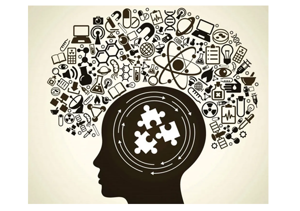

CARGA HORÁRIA ANUAL: 160 HORAS.
A organização do Plano de Orientação (PO) da área de Ciências Humanas e Sociais Aplicadas referente aos três anos do Ensino Médio Técnico segue as intencionalidades formativas da proposta pedagógica do Senac: autoconhecimento (primeiro ano); emancipação (segundo ano); e autonomia (terceiro ano). Tal proposta tem como foco auxiliar os alunos tanto no processo de conhecimento e apropriação das formas de pensar, interpretar e analisar os aspectos que constituem nossa sociedade, como no processo de inserção e ação consequentes na sua própria realidade. Em relação à prática docente, na mobilização dos saberes aqui listados, não há a necessidade de se trabalhar por meio de linearidades disciplinares, como por exemplo a cronologia da historiografia clássica. Sugerimos, deste modo, o emprego de lógicas temáticas de acordo com as competências e habilidades para cada ano, como pode ser visto a seguir. Lembramos, além disso, que não é necessário que as habilidades ou os saberes sejam abordados na sequência descrita neste PO, pois trata-se apenas de uma sugestão de organização. Destarte, estimulamos os professores a trazerem outras abordagens dos temas e saberes, buscando contextualização específica de cada localidade, bem como possíveis necessidades que se apresentem no decorrer dos processos educacionais, e em situações inerentes ao trabalho com metodologias ativas e aprendizagem baseada em projetos. Ademais, incentivamos a apresentação de autores (contemporâneos ou não) que se distanciam ou se contraponham aos padrões normalmente considerados, ampliando, assim, as possibilidades das habilidades descritas serem desenvolvidas e valorizando as diversas realidades presentes na escola. Cabe destacar que os saberes estão agrupados em campos de conhecimento, situados como orientadores temáticos, que englobam uma série de recortes específicos do saber, apresentados em lista e mais detalhadamente. Por fim, salientamos que um recorte específico do saber não corresponde necessariamente a uma única situação de aprendizagem. Ou seja, uma determinada situação de aprendizagem, quando proposta, pode englobar mais de um recorte, ou grupo deles, articulando-os. O contrário também é oportuno, isto é, um recorte específico do saber pode ser trabalhado em uma ou mais situações de aprendizagem, buscando, deste modo, seu desenvolvimento e consolidação.
EMT3CHS1: Identificar e combater as diversas formas de injustiça, preconceito e violência, adotando princípios éticos, democráticos, inclusivos e solidários, e respeitando os Direitos Humanos.
EMT3CHS101: Analisar os fundamentos da ética em diferentes culturas, tempos e espaços, identificando processos que contribuem para a formação de sujeitos éticos que valorizem a liberdade, a cooperação, a autonomia, a convivência democrática e a solidariedade. EMT3CHS102: Analisar situações da vida cotidiana, estilos de vida, valores, condutas, etc., desnaturalizando e problematizando formas de desigualdade, preconceito, intolerância, discriminação e exploração. EMT3CHS103: Identificar e projetar ações que promovam os Direitos Humanos, a solidariedade e o respeito às diferenças e às liberdades individuais em diferentes contextos e escalas. EMT3CHS104: Identificar e analisar diversas formas de violências - físicas, sociais, psicológicas e afetivas, seus significados e usos políticos, econômicos e culturais, seus agentes, sujeitos e vítimas, causas e desdobramentos, bem como discutir e propor práticas para combatê-las fundamentadas em princípios éticos e democráticos. EMT3CHS105: Analisar e avaliar os impasses ético-políticos decorrentes das transformações culturais, sociais, históricas, científicas e tecnológicas no mundo contemporâneo e seus desdobramentos nas atitudes e nos valores de indivíduos, grupos sociais, sociedades e culturas.
MARCADORES SOCIAIS DA DIFERENÇA E DIREITOS HUMANOS
• A história dos Direitos Humanos e das lutas sociais.
• Direitos Humanos e sua apresentação/representação pelos órgãos internacionais,
nacionais e ONGs.
• A saúde como direito humano: corpo, sistemas de saúde e saneamento básico.
• Propostas de organização popular em torno da moradia.
• A interseccionalidade como atravessamento de opressões.
• Lugar de fala e representatividade.
• Direitos e lutas dos povos indígenas das Américas.
• Filosofia, feminismo e direitos das mulheres.
• Teoria queer, lutas e direitos LGBTQ+.
• Direitos e lutas das populações negras.
• Racismo estrutural.
• Juventude, maturidade e envelhecimento.
• Religiões e religiosidade no mundo contemporâneo.
• Proibicionismo e guerra às drogas.
• Violência física e violência simbólica.
• Colonialismo, lutas anticoloniais e pensamento decolonial.
• Diversidade étnico-racial e direitos humanos nas Américas: riquezas, desigualdades e
potencialidades.
• Patrimônio material e imaterial, ação política e grupos de resistência cultural no Brasil.
ÉTICA E SOCIEDADE CONTEMPORÂNEA: DESAFIOS E ALTERNATIVAS
• Ética e moral: histórico e dilemas contemporâneos.
• Banalização do mal.
• Empreendedorismo: limites e possibilidades.
• Autonomia e subjetividades.
• Letramento digital: diferentes contextos e desafios.
• Filosofia contemporânea e suas correntes.
• Psicanálise, inconsciente e narcisismo.
• O amor e suas diferentes expressões.
• Sociedade líquida e suas relações.
• Inteligência artificial, ciborgues e as fronteiras do humano.
• Economia das trocas simbólicas.
GLOBALIZAÇÃO, CONFLITOS E GEOPOLÍTICA
• Primeira e Segunda Guerra Mundial.
• Velha ordem mundial e Nova ordem mundial.
• Liberalismo, neoliberalismo e organismos internacionais.
• Imperialismo e guerras híbridas.
• O papel dos Estados Unidos na configuração geopolítica: constituição e ações de um
império contemporâneo.
• O papel geopolítico do Brasil em acordos internacionais e organizações sobre meio
ambiente.
• A crise da migração no mundo contemporâneo: relações de trabalho, cultura, política e
religião.
• Diásporas: dispersão dos povos e direitos humanos.
• Regimes totalitários.
• América Latina no contexto da Guerra Fria: revoltas, revoluções e ditaduras.
• Questões abertas na América Latina no século 21: geopolítica, onda progressista e crises.
• O mito do subdesenvolvimento e o capitalismo dependente.
• África: os processos de libertação nacional e conflitos contemporâneos.
• Crises e Primaveras: os mundos árabes no século 21.
• Israel, a questão palestina e conflitos no Oriente Médio.
• A construção de imaginários sociais com base nas dinâmicas do terrorismo.
• Orientalismo.
• Conflitos na Caxemira e a questão étnica na Índia.
• China: nova potência e principais desafios.
• Separatismos na Europa.
• Geopolítica da água e os conflitos hídricos.
• Comércio mundial e relações comerciais brasileiras.
• Blocos econômicos e grupos econômicos.
• Imaginários sobre uma sociedade integrada: problematizando a aldeia global.
POLÍTICA, CIDADANIA E PARTICIPAÇÃO SOCIAL
• Crise do sistema representativo e desafios da democracia moderna.
• Constituições Federais e redemocratização no Brasil.
• Partidos políticos e sistema eleitoral brasileiro.
• Coronelismo, assistencialismo e populismo.
• Cidadania: inclusão e exclusão social e digital.
• Educação e ciência no Brasil.
• Experiências de organização política estudantil.
• Organismos, agências internacionais e agendas de cooperação e promoção de direitos,
paz e cidadania.
• Estética, criação e intervenções artísticas.
ESPAÇOS E REDES DE INFORMAÇÃO E COMUNICAÇÃO: DESAFIOS CONTEMPORÂNEOS
• Tecnologias e a nova ordem mundial: desigualdades e conflitos.
• Mídias analógicas e mídias digitais.
• Grandes conglomerados midiáticos e a regulamentação dos meios de comunicação no
Brasil e no mundo.
• Consumo e cultura de massa no mundo digital.
• Redes virtuais de informação, democratização e o direito à comunicação.
• Ciberespionagem, cibersegurança e privacidade nas redes.
• Ética digital, política e as redes sociais.
• Marco civil da Internet: redes de ação política, virtuais e físicas.
• Verdade, pós-verdade e as “fake news”.
• Indivíduo e ação no mundo digital.
• Acesso à informação: propriedade intelectual, direito autoral e pirataria.
• Big Data: o novo petróleo?